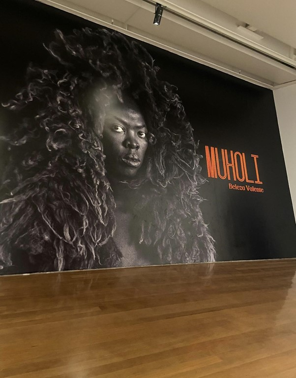

Nossa Experiência
A oportunidade de visitar a exposição é enriquecedora, não só pra quem aprecia belas fotografias, mas para conhecer a história e a luta da população negra sul-africana pós-apartheid, unida à comunidade LGBTQIAPN.
Vista da exposição "Beleza Valente" no Instituto Moreira Salles
Beleza Valente - A Exposição
Ao emergir nos quadros é nítido como a história brasileira se interliga à sul-africana. Os preconceitos, a luta e o mais importante, a resistência. As raízes brasileiras estão em solo africano e os continentes separados pelo Oceano Atlântico apresentam muitas particularidades em comum. Há uma grande importância em uma exposição sul-africana no Brasil.
Muholi compôs sua exposição com Faces and Phases (2006), um extenso mapeamento de pessoas lésbicas, bissexuais, não binárias e transmasculinas. E também com Somnyama Ngomyama, compostos por autorretratos que tratam de temas como racismo, trabalho, eurocentrismo e sexualidade. Muholi fez trabalhos inéditos produzidos no Brasil.

Quem é Zanele Muholi?
Zanele Muholi nasceu em 19 de julho de 1972 em Durban, África do Sul. Cresceu com seus cinco irmãos e apenas a mãe sustentando a casa como empregada doméstica. A paixão pela fotografia começou a surgir na adolescência e foi em 2003 que Muholi concluiu o curso de fotografia avançada na escola de fotografia e galeria Market Photo Workshop em Newtown, Joanesburgo.
Alguns anos depois, em 2009, recebeu o título de mestrado pela Universidade Ryerson, em Toronto, Canadá. O tema da dissertação apresentava a história da identidade das lésbicas negras e suas políticas no contexto sul-africano pós apartheid.
Contexto do Apartheid
A título de curiosidade, apartheid foi um movimento de segregação racial durante o período de 1948 a 1994. A separação entre pretos e brancos acontecia em todos os lugares da África do Sul, causando uma opressão da população negra que perpetua até hoje por meio do racismo estrutural.
Depois de diversos trabalhos tão relevantes para a população negra, mulheres e comunidade LGBTQIAPN, Zanele se descreve como não apenas uma fotógrafa, mas uma ativista visual. Hoje, é docente de vídeo e foto na Universidade de Bremen, na Alemanha.
O que é o IMS?
O Instituto Moreira Sales foi fundado pelo diplomata Walther Moreira Sales em 1992, o primeiro centro cultural foi criado em Poços de Caldas (MG). Em São Paulo, a inauguração foi em um casarão no bairro de Higienópolis em 1996.
A localização foi pensada pelo arquiteto Olavo Redig e o paisagismo pelo renomado Burle Marx. A inauguração na Avenida Paulista foi em 2017 e, hoje, é um importante centro cultural no coração de São Paulo.